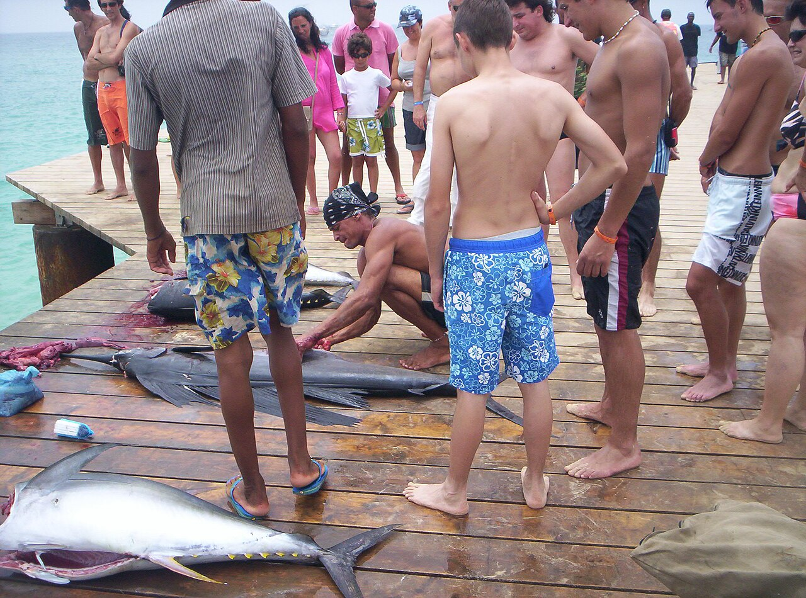
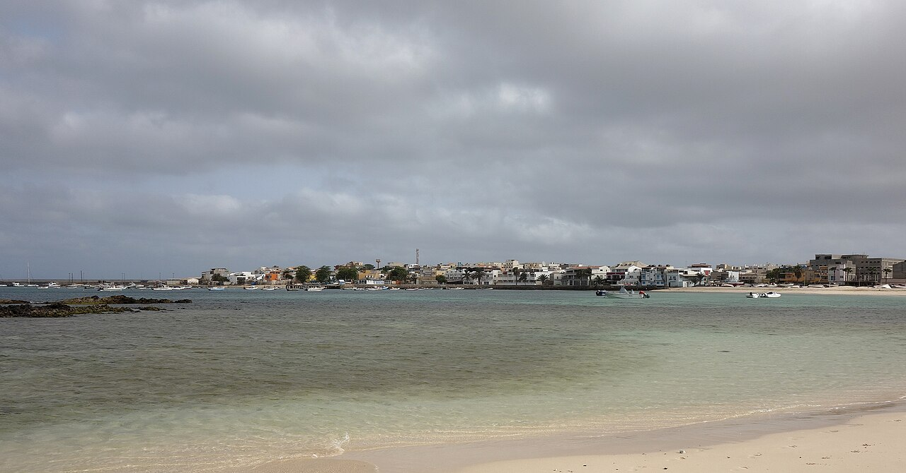
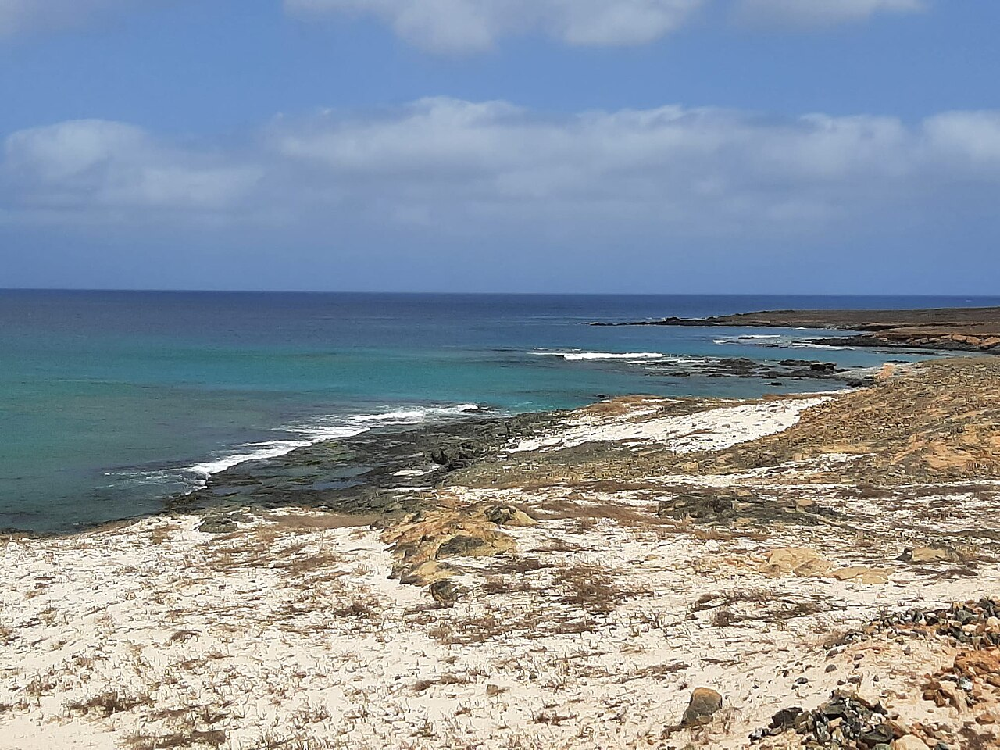
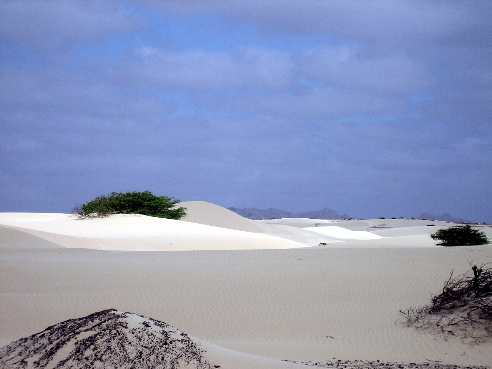
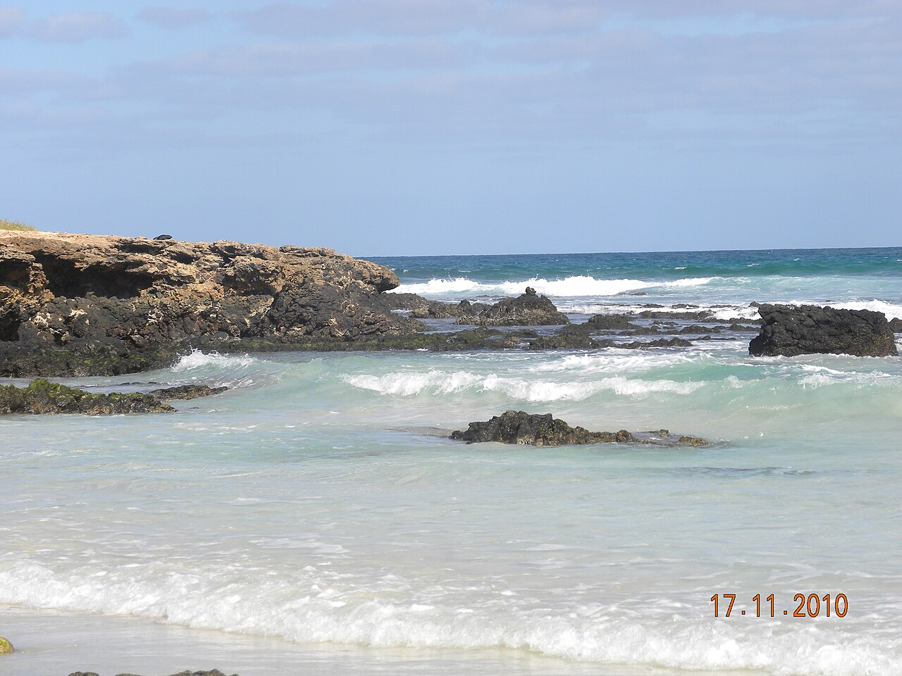
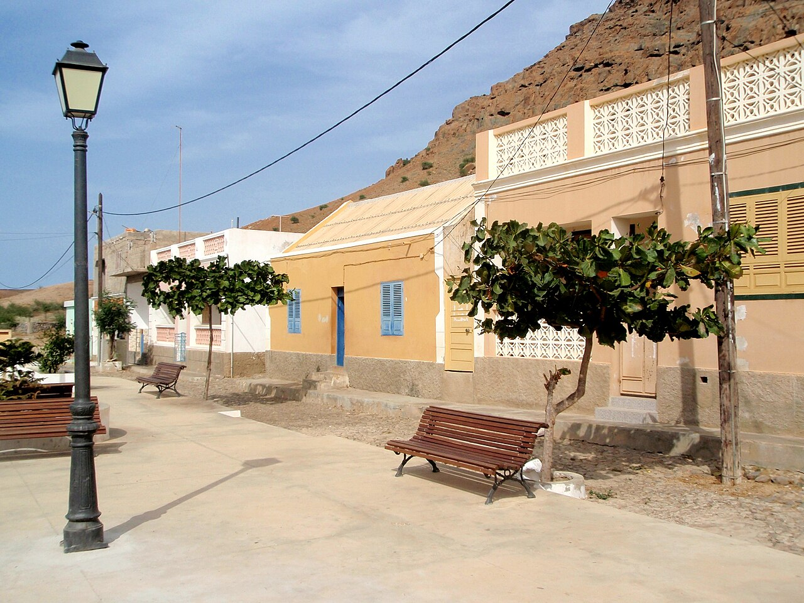
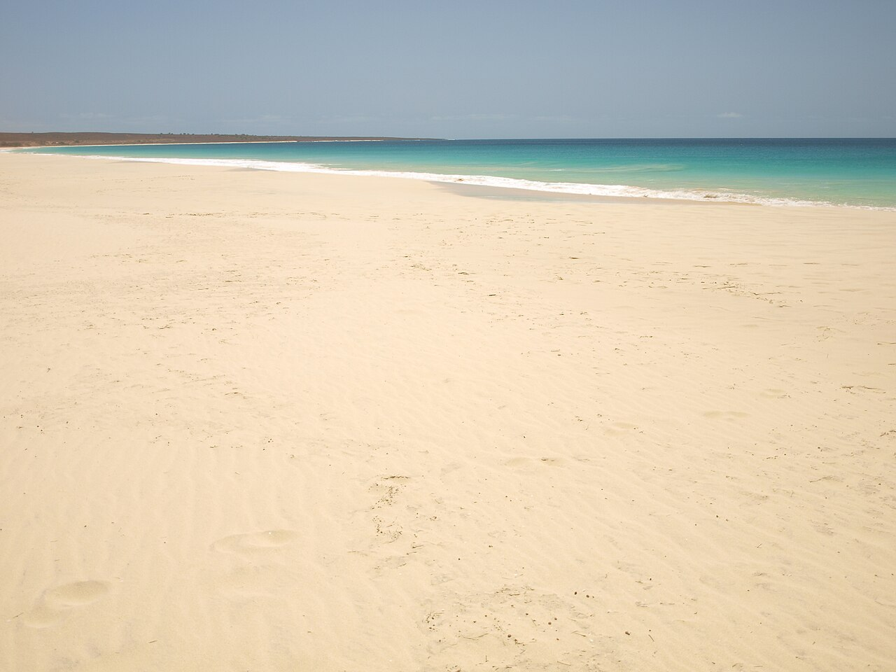
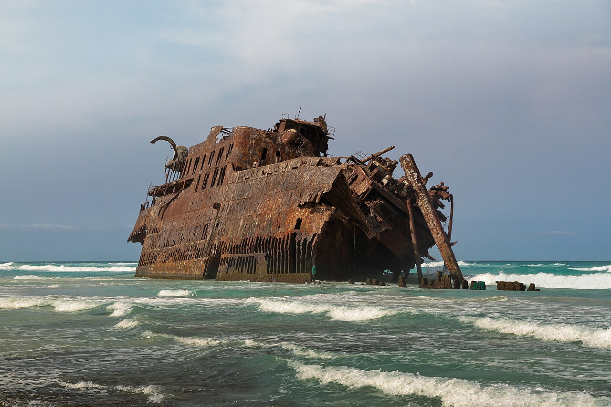

Playa de Santa Maria
Es la gran playa de arena blanca de la isla. A su alrededor está la zona hotelera y el pueblo, que se recorre a pie.
Sal + Boa Vista · desde Porto · 31 ene – 7 feb 2027 · 4 adultos
Llegada y primera puesta de sol
Es la gran playa de arena blanca de la isla. A su alrededor está la zona hotelera y el pueblo, que se recorre a pie.

Es el muelle del pueblo. Por la mañana los pescadores descargan y limpian el atún y el wahoo. Al atardecer es el punto de reunión.
Salinas, Buracona y Espargos (≈ 70 km en coche)

Son salinas dentro del cráter de un volcán apagado, explotadas desde el siglo XIX. Hoy reciben visitantes, que se bañan y flotan en las lagunas (Wikiviajes). La entrada se paga en la puerta: consultar el precio allí.

Es una costa de lava con piscinas naturales y el «Ojo Azul». Si hay mar de fondo, no te bañes.

Capital administrativa de Sal y sede del aeropuerto. Tiene más vida local que Santa Maria.
Kite Beach, Ponta Preta y la tarde en la playa (≈ 30 km)

Es la playa de los kitesurfistas, al este de Santa Maria. El viento es fuerte: el agua es para expertos, pero el paisaje vale la pena.
Vuelo interinsular y primera tarde en Sal Rei

Es la capital de Boa Vista: un pueblo pequeño con plaza colonial, playas urbanas y el islote de Sal Rei enfrente.

Islote frente a la bahía, con las ruinas del fuerte Duque de Bragança. Se llega en barca desde la playa (contratar allí; consultar el precio).
Dunas y la playa más famosa de la isla (≈ 35 km)

Campo de dunas formado por arena del Sáhara traída por el viento. Con el coche, no te metas en la arena blanda.

Kilómetros de arena con dunas detrás, al sur del pueblo de Rabil.
La playa salvaje del sur (≈ 60 km ida y vuelta, parte en pista)

Primer asentamiento de Boa Vista, a los pies del Monte Estância.

Una de las playas más largas y vírgenes del archipiélago. Ojo: suele haber corrientes, así que báñate solo donde haga pie.
El barco varado y la costa norte (≈ 30 km, pista)

Carguero español encallado en 1968 frente a la playa. El oleaje lo va deshaciendo. No subas al casco.
Vuelta
| Salida | Vuelta (+7 días) | Ruta | Compañía y horario | Escalas | Google Flights | Otra fuente | Enlace |
|---|---|---|---|---|---|---|---|
| Dom 31 ene | Dom 7 feb | OPO→SID + BVC→OPO (ida a Sal, vuelta desde Boa Vista) | easyJet · ida 13:25–17:00 · vuelta 10:40–16:05 | directo | 470 € (210 + 260, dos solo ida) | momondo 479 € · Kayak 479 € (120 €/pers.) | momondo · Kayak · GF ida · GF vuelta |
| Dom 31 ene | Dom 7 feb | OPO⇄BVC (ida y vuelta a Boa Vista) | easyJet · ida 06:20–09:50 | directo | 520 € | — | Google Flights |
| Dom 31 ene | Dom 7 feb | OPO⇄SID | easyJet · ida 13:25–17:00, vuelta 17:40–23:00 | directo | 558 € | — | Google Flights |
| Dom 31 ene | Dom 7 feb | OPO⇄SID | TAP · ida 20:35–00:10 | directo | 1.251 € | — | Google Flights |
| Dom 31 ene | Dom 7 feb | OPO⇄SID | Royal Air Maroc | 1 escala (CMN) | 1.217 € | — | Google Flights |
| Sáb 30 ene | Sáb 6 feb | OPO⇄SID | easyJet · ida 13:20–16:55 | directo | 710 € | — | Google Flights |
| Sáb 30 ene | Sáb 6 feb | OPO⇄SID | TAP | directo / vía LIS | 1.353–1.629 € | — | Google Flights |
| Lun 1 feb (fecha pedida) | Lun 8 feb | OPO⇄SID | easyJet · ida 13:35–17:10, vuelta 17:55–23:15 | directo | 646 € (162 €/pers.) | momondo 646 € · eDreams (anuncio en momondo) 178 €/pers. | Google Flights · momondo |
| Lun 1 feb | Lun 8 feb | OPO⇄SID | TAP | 1 escala (LIS) | 1.353 € / 1.469 € | momondo (combinado easyJet + TAP) 1.039 € | Google Flights |
| Mar 2 feb | Mar 9 feb | OPO⇄SID | TAP (no hay easyJet ese día) | directo / LIS | 1.169 € | — | Google Flights |
| Mar 2 feb | Mar 9 feb | OPO⇄BVC | easyJet | directo | 498 € | — | Google Flights |
| Mié 3 feb | Mié 10 feb | OPO⇄SID | easyJet | directo | 838 € | — | Google Flights |
Precios consultados el 26/10/2026 en Google Flights (precio final con tasas), momondo y Kayak, para 4 adultos en clase turista. Horas locales: Porto UTC+0; Cabo Verde UTC−1. En Google Flights no aparece la opción «multidestino» (ida a un aeropuerto y vuelta desde otro), así que se ha calculado sumando dos billetes de solo ida. momondo y Kayak sí la muestran como un único viaje.
| Opción | Datos | Precio (4 pers.) | Fuente |
|---|---|---|---|
| Avión CVsky ★ mejor relación calidad-precio | Vuelo SID→BVC de unos 25 min. Según gatenavo, el 7B340 llega a las 11:55 y opera unas 5 veces por semana. El horario de invierno va del 25/10/2026 al 27/03/2027. Caboverde24 (20/07/2026) avisa de que no hay vuelo todos los días y de que a veces llevan escala. | desde 8.776 CVE/pers. ≈ 80 € → ≈ 319 € precio orientativo | cvsky.cv · gatenavo |
| Ferry CV Interilhas (Linha Redonda) | Sal–Boa Vista en ≈ 3 h 05. Las salidas son irregulares y a menudo de noche: mira el calendario. | 2.500 CVE/pers. (no residentes) ≈ 22,70 € → ≈ 91 € precio orientativo | Rutas y horarios · Tarifas (PDF) |
La tarifa de CVsky es la publicada en su web «desde» y puede variar. Cambio fijo: 1 € = 110,265 CVE. Consultado el 26/10/2026.
Criterio: nota de 8 o más en Booking o Expedia. Las tarifas que aparecen son las de búsqueda pública, sin iniciar sesión. exacto 26/10/2026
| Hotel | Nota | Opiniones | Fuente nota | Booking (total 2 hab.) | Expedia (total 2 hab.) | Notas | Enlace |
|---|---|---|---|---|---|---|---|
| Damfjord Boutique Hotel ★ mejor relación calidad-precio | 8,7/10 | 597 | Booking | 591 € | no aparece | 2 × doble superior, desayuno, cancelación gratis. | Booking |
| Hotel Da Luz | 8,6/10 | 92 | Expedia | — | 629 € | Opción alternativa barata en Expedia. | Expedia |
| Buzio Beach Hotel | 8,4/10 | 194 | Booking | 953 € | no aparece | En primera línea de playa, desayuno. Nota de ubicación 9,3. | Booking |
| Hotel Sobrado | 8,0 · 8,2/10 | 565 · 103 | Booking · Expedia | 962 € | 837 € | Desayuno. | Booking · Expedia |
| Hotel Dunas de Sal | 8,3 · 8,2/10 | 342 · 93 | Booking · Expedia | 1.362 € | 1.111 € | Desayuno. | Booking · Expedia |
| Hotel Morabeza | 8,7 · 9,2/10 | 690 · 393 | Booking · Expedia | 1.802 € | 1.758 € | En la playa, desayuno. Nota de ubicación 9,7. El clásico de Santa Maria. | Booking · Expedia |
| Riu Funana (todo incluido) | 8,3 · 8,8/10 | 352 · 173 | Booking · Expedia | 1.431 € | 1.434 € | Resort con todo incluido. | Booking · Expedia |
| Riu Palace Santa Maria (todo incluido) | 8,5 · 9,2/10 | 177 · 99 | Booking · Expedia | 1.949 € | 1.953 € | 5 estrellas, con todo incluido. | Booking · Expedia |
| Hotel | Nota | Opiniones | Fuente nota | Booking (total 2 hab.) | Expedia (total 2 hab.) | Notas | Enlace |
|---|---|---|---|---|---|---|---|
| Hotel Dunas Boavista ★ mejor relación calidad-precio | 8,5/10 | 131 | Booking | 661 € | no aparece | A 100 m del centro, frente a la playa. Nota de ubicación 9,6. 2 × doble, desayuno, cancelación gratis. | Booking |
| Ouril Agueda | 8,4/10 | — | Expedia | — | 660 € | Alternativa en Expedia; la página no muestra el número de opiniones. | Expedia |
| Oásis White Hotel | 8,4 · 8,8/10 | 498 · 27 | Booking · Expedia | 1.147 € | 1.041 € | Desayuno. | Booking · Expedia |
| Spinguera Ecolodge | 9,6 · 9,8/10 | 147 · 16 | Booking · Expedia | 1.700 € | 1.782 € | Ecolodge aislado a 13,6 km de Sal Rei, desayuno. Hace falta el coche. | Booking · Expedia |
| Barceló Marine Boa Vista (solo adultos, todo incluido) | 8,7 · 9,4/10 | 205 · 19 | Booking · Expedia | 1.980 € | 2.408 € | Resort con todo incluido. | Booking · Expedia |
| Riu Karamboa (solo adultos, todo incluido) | 8,3 · 8,6/10 | 162 · 107 | Booking · Expedia | 2.087 € | 2.092 € | Resort con todo incluido. | Booking · Expedia |
«No aparece» quiere decir que el hotel no salió en los resultados de Expedia para esas fechas. En ese caso solo hay precio de Booking. La tasa turística (ver checklist) puede cobrarse aparte en el hotel.
| Isla | Empresa o fuente | Vehículo | €/día | Total | Condiciones | Enlace |
|---|---|---|---|---|---|---|
| Sal (3 días) | No Limits Adventure | SUV compacto (Vitara, Duster o similar) | 60 € | 180 € precio orientativo | Tarifa de la web; puede haber suplemento por entrega. | web |
| Sal (3 días) | Luz-Car ★ mejor relación calidad-precio | Renault Duster | 69 € | 207 € precio orientativo | Empresa local; también tiene Urban Cruiser a 70 € y Jimny a 75 €. | luzcar.cv |
| Sal | momondo (media de la categoría SUV en el aeropuerto SID) | SUV | ≈ 113 € | ≈ 339 € precio orientativo | Es un precio medio, no una oferta concreta. | momondo |
| Boa Vista (4 días) | OnCarus ★ mejor relación calidad-precio | SUV 4x4 | 70 € | 280 € precio orientativo | Edad mínima 23 años, carné con 2 años de antigüedad, fianza de 400 €, combustible lleno-lleno, sin salir de la isla. | oncarus.com |
| Boa Vista (4 días) | No Limits Adventure | Toyota RAV4 | 90 € | 385–395 € precio orientativo | Suma 10 € de limpieza y 15–25 € de entrega; fianza de 300 € en efectivo. | web |
Kayak (kayak.es) no mostró ningún proveedor para SID ni BVC en estas fechas («0 resultados», consultado el 26/10/2026), así que los precios salen de las webs de las empresas locales. El combustible no está incluido. Precio por día según la tarifa publicada: consultar en el enlace para el total exacto.

La cachupa es el plato nacional: un guiso de maíz y judías al que se añade pescado o carne. Prueba también el atún, el wahoo, la lagostada (langosta), el pulpo y la cerveza local Strela (Wikiviajes).
| Isla | Restaurante | Tipo | Fuente |
|---|---|---|---|
| Sal | Café Criolo | Cocina caboverdiana: cachupa, pulpo, atún. Suele haber cola, así que ve pronto. | Cabo Verde Experience |
| Sal | Cam's Restaurante e Cafetaria | Marisco fresco y opciones vegetarianas. | Tripadvisor |
| Sal | Barracuda | Pescado del día, atún, pulpo a la plancha. | Tripadvisor |
| Boa Vista | Sodade | Cocina caboverdiana y mediterránea con música en directo, en una casa colonial. Nota 4,7/5 con 182 opiniones en Tripadvisor. Abre de 8:00 a 14:00 y de 17:00 a 24:00. | Tripadvisor · Barts Boekje |
| Boa Vista | Casa Rosa Boa Vista | Nota 4,7/5 con 159 opiniones en Tripadvisor. | Tripadvisor |
| Boa Vista | Morabeza Beach Bar & Lounge | En la misma playa: langosta, pasta y vino. Abre todo el día. | Barts Boekje |
| Boa Vista | Bowlavista · Ease | Bowls con vistas al puerto (10:00–22:00) y pescado a la brasa sencillo. | Barts Boekje |
Los precios de las cartas no están verificados: consultar en el enlace. Horarios según la fuente citada; confírmalos en el local.
Puedes marcar las casillas, pero no se guardan: es una página estática. Datos verificados el 26/10/2026 en las fuentes enlazadas.
| Concepto | Total | Tipo |
|---|---|---|
| Vuelos internacionales (easyJet, 31 ene OPO→SID y 7 feb BVC→OPO) | 470 € | exacto 26/10/2026 |
| Vuelo interislas CVsky Sal→Boa Vista (4 pers.) | ≈ 319 € | precio orientativo |
| Hotel Sal: Damfjord, 3 noches, 2 habitaciones, desayuno | 591 € | exacto 26/10/2026 |
| Hotel Boa Vista: Dunas Boavista, 4 noches, 2 habitaciones, desayuno | 661 € | exacto 26/10/2026 |
| Coche en Sal: Luz-Car Duster, 3 días | ≈ 207 € | precio orientativo |
| 4x4 en Boa Vista: OnCarus, 4 días | ≈ 280 € | precio orientativo |
| TSA de entrada: 4 × 3.400 CVE | ≈ 123 € | exacto 26/10/2026 |
| Tasa turística: 4 pers. × 7 noches × 276 CVE | ≈ 70 € | precio orientativo |
| Maletas de easyJet, combustible, comidas y excursiones | no incluido | consultar en el enlace |
| TOTAL de lo calculable | ≈ 2.721 € (≈ 680 €/pers.) | exacto + orientativo |
Las cifras exactas son las tarifas mostradas el 26/10/2026; pueden cambiar en cualquier momento y no hay nada reservado. CVE convertidos al cambio fijo de 110,265. Las comidas, el combustible, las excursiones y las maletas no se incluyen porque no hay un precio verificado.
Se comparan con la ida y vuelta Porto⇄Sal del lunes 1 febrero, que cuesta 646 €. Fechas probadas: del 30 enero al 3 febrero, siempre con vuelta 7 días después. exacto 26/10/2026
| Opción | Total | Ahorro | Enlace |
|---|---|---|---|
| OPO→SID dom 31 ene + BVC→OPO dom 7 feb (opción recomendada) | 470 € | 176 € | momondo |
| OPO⇄BVC mar 2 → mar 9 feb (todo en Boa Vista, o con salto a Sal) | 498 € | 148 € | GF |
| OPO⇄RAI (Praia, Santiago) mar 2 → mar 9 feb, easyJet 13:05–16:45 | 494 € | 152 € | GF |
| OPO⇄BVC dom 31 ene → dom 7 feb | 520 € | 126 € | GF |
| OPO⇄VXE (São Vicente y Santo Antão) sáb 30 ene → sáb 6 feb, easyJet 07:00–10:30 | 540 € | 106 € | GF |
| OPO⇄SID dom 31 ene → dom 7 feb | 558 € | 88 € | GF |
| LIS⇄BVC dom 31 ene → dom 7 feb (easyJet) · sáb 30 ene: 494 € | 490 € | 156 € (sin contar el viaje a Lisboa) | GF |
| LIS⇄SID dom 31 ene → dom 7 feb (easyJet) | 558 € | 88 € (sin contar el viaje a Lisboa) | GF |
| VGO⇄SID / SCQ⇄SID 31 ene y 1 feb | sin resultados | — | GF VGO · GF SCQ |
Los días sin vuelo directo barato fueron: OPO–BVC el lunes 1 y el miércoles 3 de febrero, y OPO–VXE del 31 de enero al 2 de febrero. Desde Vigo y Santiago, Google Flights no devolvió ningún resultado. En hoteles, la alternativa más barata son los apartamentos de 2 dormitorios (ver «Hoteles»), que ahorran ≈ 250–400 € frente a los hoteles recomendados.